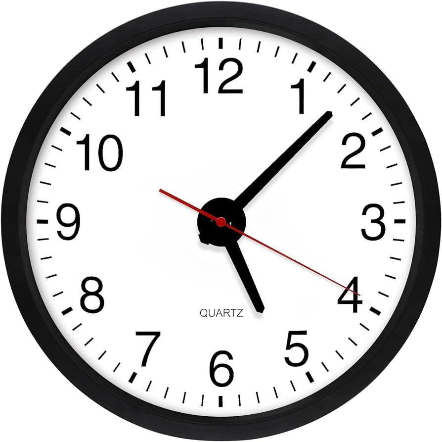
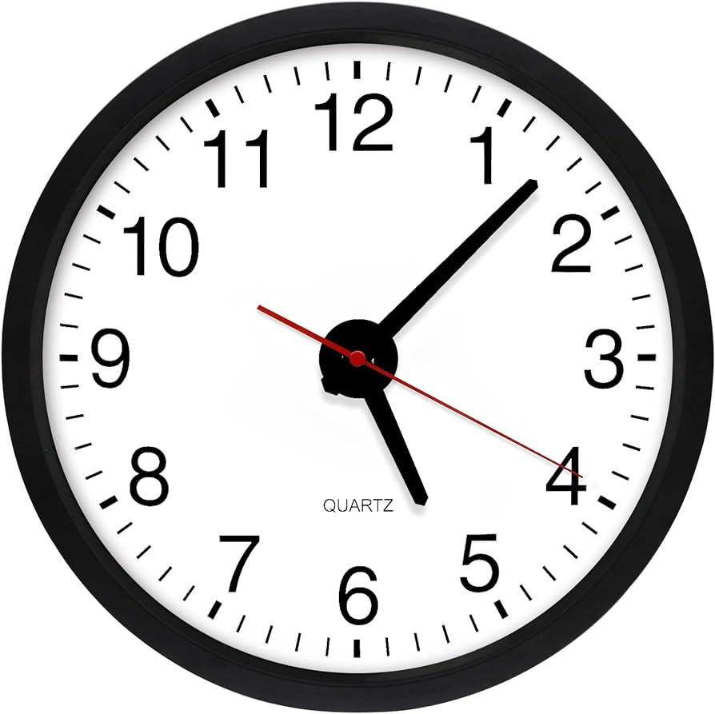
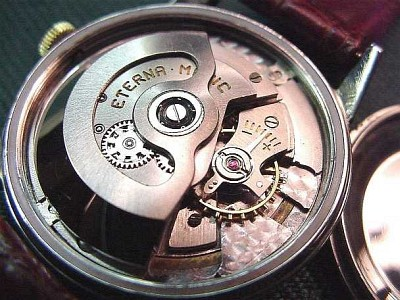

Descripción
Los relojes analógicos muestran la hora mediante manecillas que señalan las horas, los minutos y, en algunos casos, los segundos. Son conocidos por su diseño clásico y elegante.
Descubre los diferentes tipos de relojes, sus características y cómo elegir el mejor para ti.
Los relojes analógicos muestran la hora mediante manecillas que señalan las horas, los minutos y, en algunos casos, los segundos. Son conocidos por su diseño clásico y elegante.
Los relojes automáticos funcionan mediante un rotor que gira con el movimiento de la muñeca del usuario, eliminando la necesidad de darles cuerda manualmente. Son una maravilla de la ingeniería relojera.
